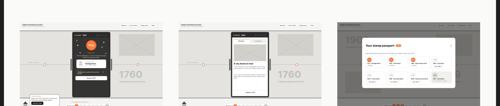
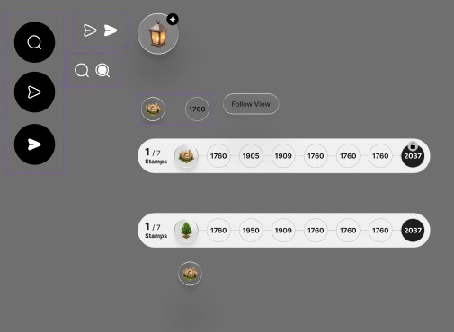
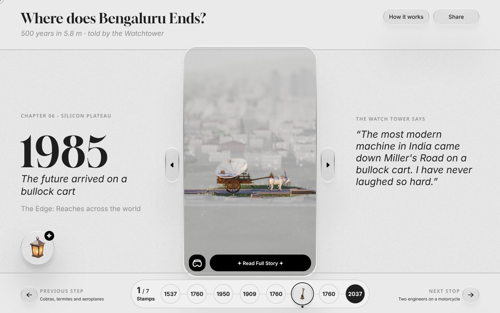
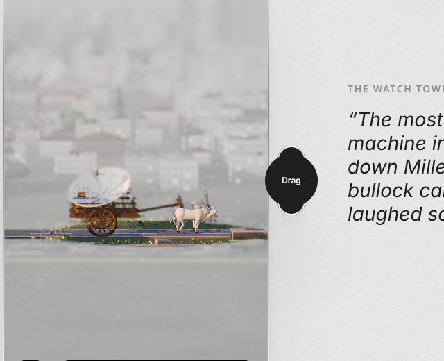
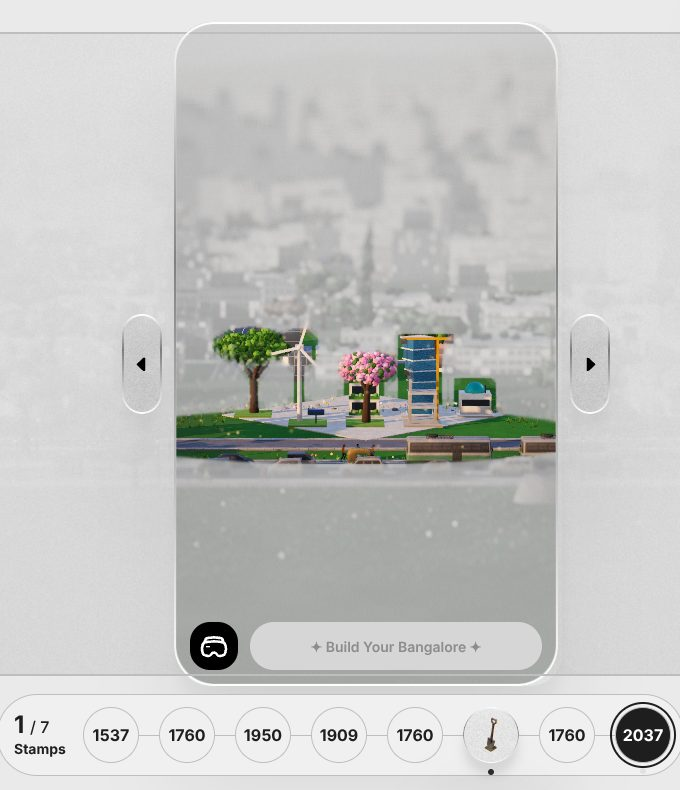
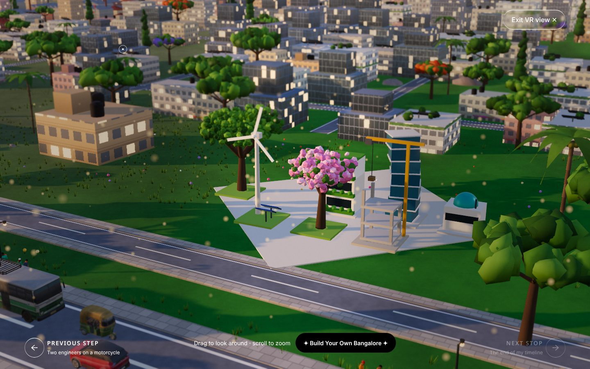

Case study · Experience design · Digital slider · 3D web · AI-assisted build
Where does Bengaluru end?
500 years of a city on a 5.8 metre wall. A movable touch screen becomes a lens that brings each memory back in colour, and visitors earn the right to design the city's future.

Solo designer. Research, content strategy, UX, UI, interaction, creative direction and a working front-end prototype.
7 days for the assignment (30 Oct to 6 Nov 2026), then 2 days of refinement.
Design assignment for DVSI, an experience design studio in Bengaluru. Brief: a Digital Slider experience for an experience centre.
Figma, three.js, GSAP, Claude (agentic coding), Figma MCP, Playwright, GitHub Pages.
The short version
A 5800 × 1400 mm printed timeline with a 55" touch screen that slides along it. The screen has to reveal deeper stories as it moves, and the whole thing has to work for a passer-by in 5 seconds and a curious visitor for 10 minutes.
Cut 36 milestones down to 8 stops. Designed the screen as a colour lens over a grey archive, a stamp passport that turns exploring into a mission, and a 2037 finale where visitors build their own Bengaluru. Then built it as a 3D web simulation.
A working, shareable experience that reviewers open with no briefing. 9 design iterations in one week, each one driven by a problem I found in the previous version, with AI as a fast build partner and every design call kept with me.
A physical installation, simulated on the web
The brief asked for a large-format timeline graphic and the UI for a movable touch screen that acts as a window into the story. Content, navigation and storytelling were open. I chose to tell the story of my own city, Bengaluru, which turns 500 in 2037.
Because reviewers would only see it on a laptop, I also had to make a physical installation feel real inside a browser.
5800 × 1400 mm, about 4:1. It must read on its own from 3 m.
55" portrait, 1080 × 1920 px. Touch targets in the lower two thirds.
The wall is about 8.5 screen widths long, so 8 stops, 725 mm apart.
Idle, sliding, arrived, deep dive and timeout, planned before any screen.
Who it is for, what works, and what to cut
Why this topic
Bengaluru has clear eras and a built-in arc: green, then grey, then digital. And the 500th birthday in 2037 gives the installation a reason to exist, the same way anniversaries drove the best precedents I studied.
Two audiences, one experience
The wall is for people in the experience centre. The website is what reviewers and everyone else actually open. I paired each wall visitor with the web visitor who behaves the same way, so one design decision serves both.
Locals, 20 to 45, often in tech. Want to see their city in a new light.
Opens a link a friend shared. Wants the same surprise, on a laptop or phone.
Surprising facts, places they know, a narrator with humour. A Share button so the link travels.
Moved here for work. Wants to understand where they live.
Has never been to Bengaluru. Knows nothing about Kempe Gowda or Lalbagh.
Plain language and no assumed local knowledge. Every stop explains itself in one line.
Delegates and tourists. Want a quick, impressive overview.
Has 2 minutes between meetings. Decides fast whether to keep going.
A cinematic landing and one signature moment, the colour lens, inside the first drag.
School and college visits. Learn together, while having fun.
Designers and students who want to see how it was made.
How it works, the wall view with real dimensions, story pages and this case study.
Passing by or waiting. Needs a hook before anything else.
Opens the link with no context or briefing.
One line from the Watchtower, coach marks with a clear Next, and a cursor that says Drag.
Precedent study


Takeaways
- Animate the printZEISS
- Move to navigateZEISS
- Reframe the briefDayton
- Two threadsDayton
- Explore headerDVSI
- The art continuesDVSI
What I learnt
- Give a reason to slide
- One metaphor ties it together
- The anniversary is the hook
- Design for watchers too
- Content as data (CMS)
- Speakers allow a voice
What not to do
- Screen copies the wall
- Walls of text and specs
- Future split from the story
- Dead screen, no invite
- Built for one user only
- All dates given equal weight
Synthesis: what to take, what I learnt and what to avoid. The biggest one: give people a reason to slide.
Content strategy: 36 milestones to 8 stops
I listed every milestone from c. 890 to 2037 and ran four filters, each with one question: does it give the city a new identity? Can it be one scene, backed by two or more sources? Are the stops evenly spread? Is there a moment to play?
Principles I designed against
The wall reads alone from 3 m
A year and one object per stop. Five seconds to get it.
The screen is a lens, not a copy
Grey archive outside, colour inside. The slide itself tells the story.
Learn by doing
No manual, no menu to read. Every control teaches itself on first use.
Colour is the reward
The interface stays quiet so the restored memories carry the colour.
One voice
The Watchtower narrates in first person. Honest about being a narrator.
Effort earns the future
Stamps unlock 2037, and 2037 is something you build, not something you read.
HOW MIGHT WE · 01How might we give a passer-by a reason to touch the screen at all?
HOW MIGHT WE · 02How might we make moving the screen feel like uncovering, not scrolling?
HOW MIGHT WE · 03How might we end a history timeline with a decision, not a full stop?
Web journey: Meera, 10 minutes, no briefing
Design lead at an experience studio, opening the link between meetings. She is the reviewer the web version has to win.
- 1Lands on one line from the Watchtower.
Intrigued - 2Sees the frame and a drag hint.
Oriented - 3First drag: grey turns to colour inside the frame.
Surprised
- 4Snaps to a stop; the memory builds itself.
Hooked - 5Earns a stamp, reads the full story.
Engaged - 6Jumps between years with the stamp bar.
In control
- 7Unlocks 2037 with all 7 stamps.
Proud - 8Builds her Bengaluru and sees it in 3D.
Delighted - 9Walks it in VR, shares the link.
Convinced
Nine versions in one week
Each version ended with something I noticed. That observation set the next version.
Prove the slide before adding content

A guide, hooks and a reward


Stop coding, fix the story in wireframes




From photo cards to one object per year


My own UI, then onboarding


Final build from my Figma screens

What changed from first version to final
| Area | First version | Final | Why |
|---|---|---|---|
| Wall at rest | Year, headline, photo and caption | Year and one 3D object | Must read from 3 m in 5 seconds |
| The frame | A screen that shows content | A lens that rebuilds the memory as you slide | The slide becomes the story |
| Goal | 8 stamps, loosely explained | 7 stamps unlock building 2037, stated up front | It did not add up |
| Deep dive | Story, Then & Now, In numbers | One full story page, plus Open in VR | Then & Now added no value |
| Guidance | Speech bubbles | Coach marks plus an assistant you can ask | More controls needed a real introduction |
| 2037 | A grid you fill in | Your plan rendered as a 3D city you can walk in VR | The reward should feel like yours |
A grey archive, with colour you earn
Typography
Colour
The interface is almost colourless, like an old photograph. Colour only comes from the 3D memories.
Characters and stamps
 The Watchtower · narrator
The Watchtower · narrator Mr. Lamp · assistant
Mr. Lamp · assistant 1537 · Heritage
1537 · Heritage 1760 · Trees
1760 · Trees 1905 · Clean power
1905 · Clean power 1909 · Labs
1909 · Labs 1985 · Tech park
1985 · Tech park 2007 · Startup street
2007 · Startup street 2037 · Build your own
2037 · Build your ownTone of voice
The Watchtower talks like an old friend: first person, warm, a little witty, one scene per line, and every line ends with something to do.

Key moments, and the thinking behind each
Slide to remember
Each year shows one object in grey. Drag the frame over it and the full scene rebuilds in colour, tied to how far you slide. Let go and it snaps to the nearest stop.

Always know where you are
The stamp passport lives on every screen. The year the frame is on gets a thicker ring and a dot, live while you slide, so you know which stamp you are collecting.
Over the frame arrows, the cursor's centre dot grows into a "Drag" disc, so the main interaction names itself.

The full story, then step inside
Each stop opens into a chapter page with an in-page index and a note on the history. It ends with two clear choices: go back to the timeline, or open the scene in VR.

2037 stays locked until you earn it
At 2037 the button reads "Build Your Bangalore" but stays disabled. Hover or tap it and the Watchtower tells you exactly what is missing: "Bring me all 7 stamps first to enable me. You have 3."
A locked state that teaches, instead of one that just blocks.

Build the Bengaluru you want
Every stamp you earned becomes a block. Place them on the grid, then View Your Bangalore. The 2037 scene, grey until now, is replaced by your plan in full colour.


Walk your city in VR
The VR view lets you look around any scene. At 2037 it shows your own city, with a way back to keep building. Exit VR sits in the same top-right spot on every screen.

Tension, resolution, outcome
The screen disappears on a laptop
A smooth slide, but no reason to slide
The goal did not add up
The hero object got lost
A tour that skipped itself
A locked button that only said no
The reward felt generic
An assistant that might invent history
AI as a build partner, with me in the loop
I used an agentic AI workflow to go from research to a working 3D build in a week. The AI generated, coded and checked. I set direction, judged quality and made every design call.
Research synthesis
LLM-assisted desk research across sources, then my own cross-check. The "two or more sources" rule filtered the milestones.
Content strategy
The AI as a sparring partner for the 36 to 8 filters and the narrator's voice. I wrote the rules and picked the stops.
Rapid prototyping
Natural-language prompts turned into working 2D and 3D prototypes in hours, so I could test feel before polish.
Design in Figma
Wireframes, UI, characters and components, all mine. Figma is the source of truth.
Design to code via MCP
The Figma MCP server gave the coding agent direct access to frames, layout and tokens by node ID, so the build matched the design.
Agentic coding
Claude worked as an AI pair programmer in a cloud workspace: three.js scenes, GSAP motion, states and a single-file build.
Automated visual QA
Headless Chromium (Playwright) rendered the WebGL scenes and took screenshots, so the agent checked its own work before I saw it.
Ship
Each approved change was committed to GitHub with a clear message and published, so every version is traceable.
- Building and rebuilding versions in hours, not days
- Turning Figma frames into working code
- Catching layout bugs with automated screenshots
- Keeping a clean, versioned history
- The topic, the 8 stops and the story arc
- The lens, the stamps and the 2037 reward
- Every visual, the characters and the voice
- What to cut: Then & Now, extra text, generic visuals
Mr. Lamp, a grounded assistant
Visitors can ask the lantern anything about the city. In a museum, a wrong answer is worse than no answer, so I designed it as closed-domain question answering with guardrails.
- Knowledge base: my own research document, compiled into the build
- Retrieval: the question is matched to stops, years and topics, then the best passage is returned
- Grounding: answers come only from that document
- Fallback: "I am not aware of it" instead of a guess
- Designed states: mission, search, result and chat
Next step: swap the matcher for an LLM with retrieval-augmented generation (RAG) and citations, plus Kannada, Hindi and voice.
The vocabulary, in plain words
What I delivered
A live 3D web simulation of the full installation: 8 stops, 7 stamps, story pages, VR and a city builder, in one link.
Research, journey map, 12 wireframes, final UI, characters, stamp set and component states in Figma.
A research and process document that shows every version, decision and trade-off.
Research to a working build in 7 days, with 9 versions explored instead of the usual one or two.
No usability data yet, so I am not claiming metrics. The direction is clear: each version removed a reason for a first-time visitor to get lost, and the test plan below is how I will measure it.
What I learnt
Start with the physical numbers
Wall size, screen size and stop count decided the whole structure.
Prove the interaction early
A rough slide told me more than any static screen.
Story before visuals
Fixing "7 stamps, build 2037" in wireframes made every later screen easier.
Cut what doesn't add value
Less on screen meant the frame and the memories stood out.
Make the reward feel earned
A reward needs a small action, and an ending that is yours.
AI speeds up iteration, I make the calls
AI let me explore far more in a week. Judgement on what to keep stayed with me.
Next: test my own bias
I designed it, so I know where everything is. Before calling it done, 5 to 6 people who have never seen it will try it with no briefing, thinking aloud.
| Task | What I want to learn |
|---|---|
| Dragging | Do they drag the frame without being told? |
| Stamps | Do they notice they are collecting stamps, and why? |
| L1 to L2 | Can they open a full story and come back? |
| VR icon | Do they recognise it and know what it does? |
| Goal | Can they say what unlocks 2037? |
| Mr. Lamp | Do they find the lantern and ask it something? |
Measures: task success, time on task, wrong clicks, and two questions after: "What was the goal?" and "What did each icon do?"
Thanks for reading